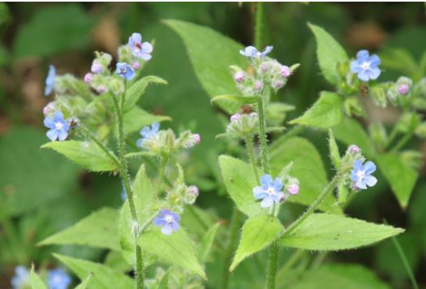
Nature: A hairy-leaved perennial that grows to about 80cm (31in) in height with bright blue flower clusters in late spring and early summer. Regenerates from roots. Spreads by seed.
Treatment: Dig out root or use selective broadleaf weed killer
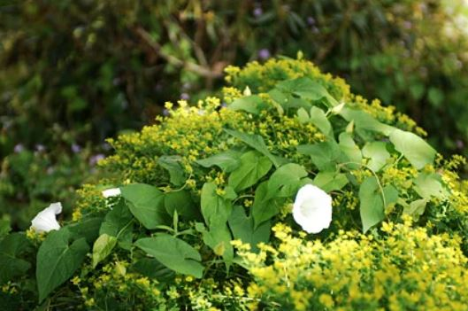
Nature: Twinning perennial climber. White trumpet flowers in summer. Fleshy cream roots run deep and can regrow from small sections.
Treatment: Persistent digging or systemic weed killer
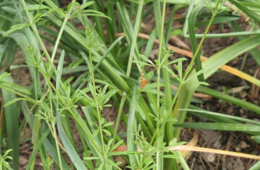
Nature: Long sprawling annual to 1m (40in) with whorls of slim leaves. Insignificant white flowers, followed by green bristly seeds, are produced in large quantities.
Treatment: Persistent digging or systemic weed killer
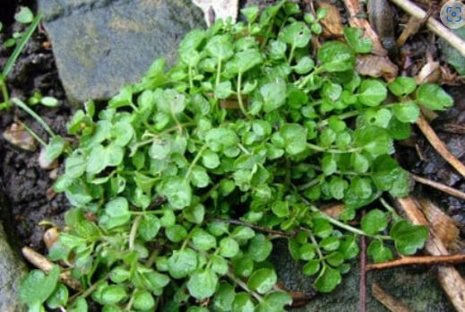
Nature: Annual rosettes of small rounded leaflets. Flower spikes up to about 30cm (12in) of small white flowers. Spreads by explosive seedpods.
Treatment: Pull out by hand
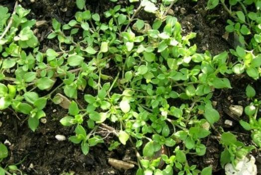
Nature: Mat–forming, about 35cm (13in) high, readily rooting annual. Small green leaves, white starry flowers. Produces lots of seed over a long season.
Treatment: Pull out by hand
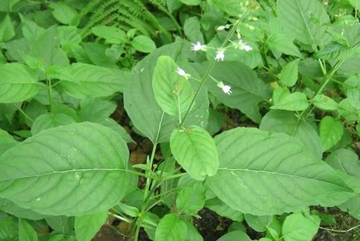
Nature: Grows to about 60cm (24in) in height with opposite leaves. Flower spikes of small white flowers and pink buds. Spreads by brittle white perennial roots.
Treatment: Pull out by hand
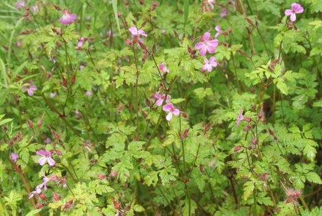
Nature: Pink flowers, red-tinged stems and lacy foliage from a central rosette. Strong musty smell. Annual to 30cm (12in). Spreads by seed.
Treatment: Pull out by hand
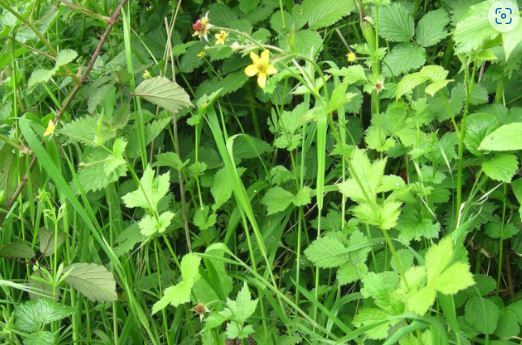
Nature: Perennial with rosettes of leaves made up of three to five rounded lobes. Yellow five-petalled flowers held above to 60cm (24in). Spreads by root fragments and seed.
Treatment: Pull out with a fork
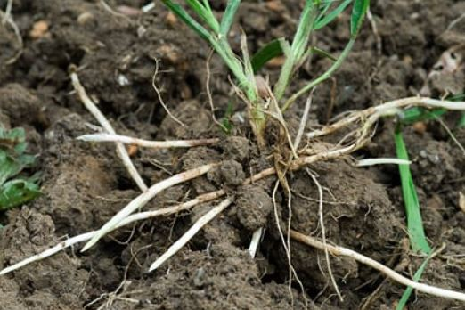
Nature: Blades of grass in clumps. Upright unbranched flower spikes in late summer. Thin wiry white perennial roots form dense mats just below surface level.
Treatment: Pull out with a fork
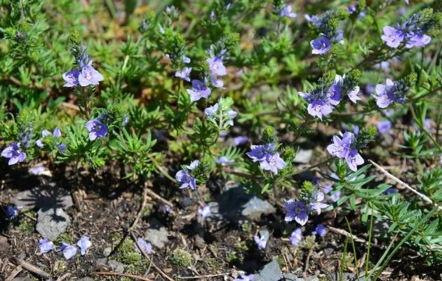
Nature: Blades of grass in clumps. Upright unbranched flower spikes in late summer. Thin wiry white perennial roots form dense mats just below surface level.
Treatment: Pull out with a fork
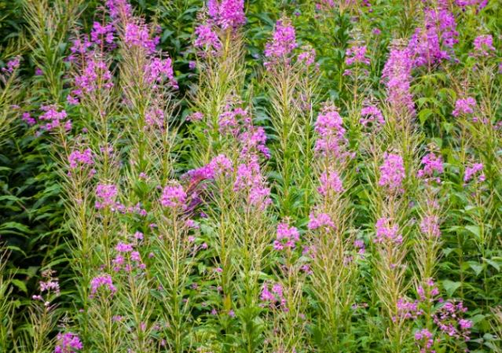
Nature: Blades of grass in clumps. Upright unbranched flower spikes in late summer. Thin wiry white perennial roots form dense mats just below surface level.
Treatment: Pull out with a fork
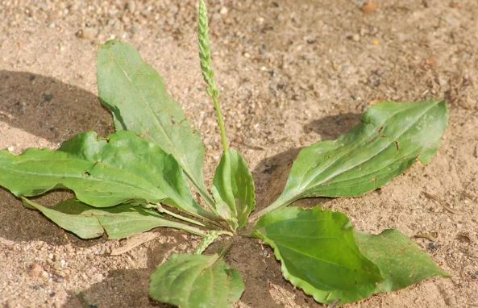
Nature: Broad leaf, grows in lawns
Treatment: Pull out with a fork, will regenerate from any roots left
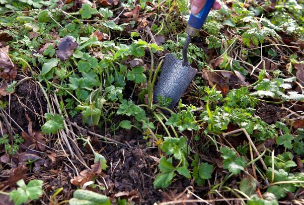
Nature: Creeping buttercup (Ranunculus repens) has fresh green, three-lobed leaves with serrated edges, and bright yellow buttercups that make a cheery display.
Treatment: To remove creeping buttercup dig out the main plant but also follow the runners and trace any new plants that have formed elsewhere in the border.
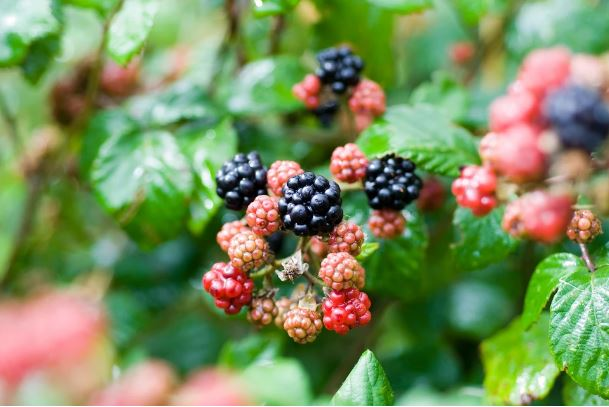
Nature: Bramble (Rubus fruticosus) has long, thorny stems and serrated, ribbed leaves that are dark green on top and pale underneath. Sometimes they turn purple in winter.
Treatment: In winter and early spring, newly-rooted sections can be removed easily when pulled gently. Then, use a sharp spade to dig out the woody root of the parent plant.